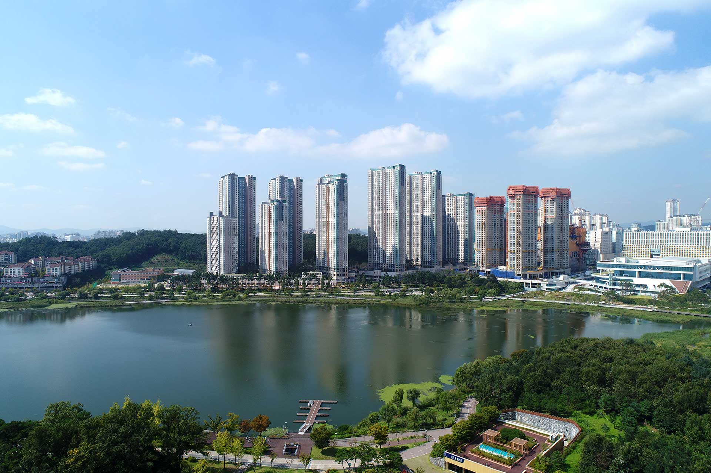
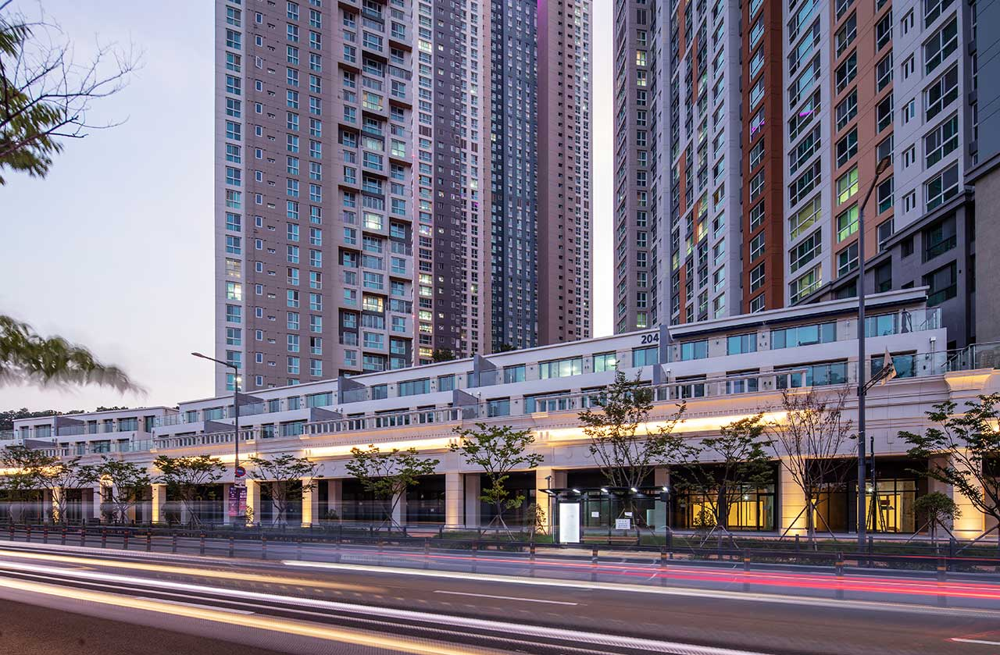
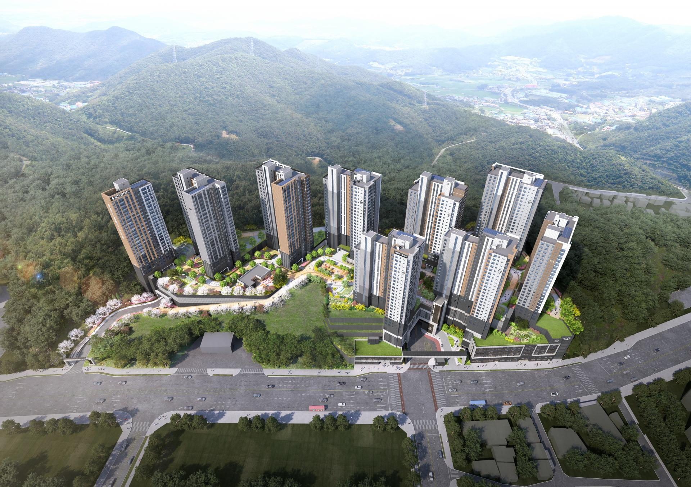
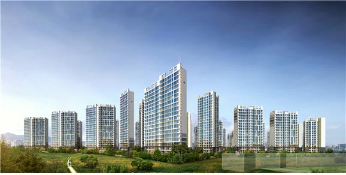
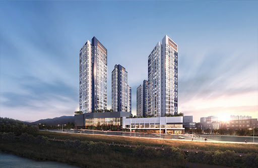
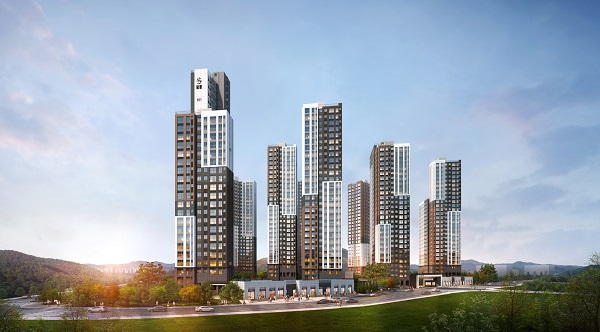
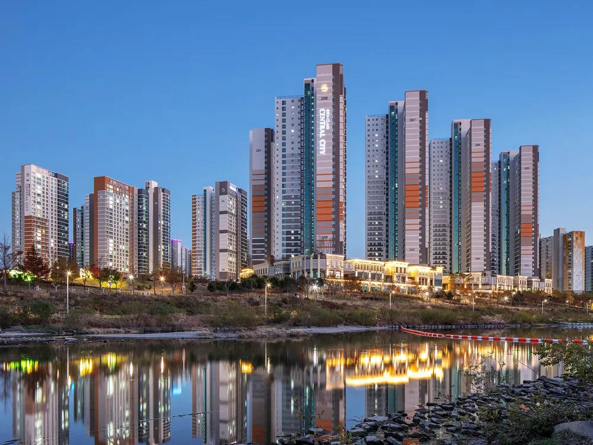

수원시 광교 C2블럭 주상복합은 오피스텔, 공동주택, 판매시설로 이루어져 ‘광교의
별이 되어 특별한 색을 빛내다’(Star Spectrum) 개념으로 프로젝트를 진행 하였다.
사색공원과 원천호수 그리고 주변 주거 환경을 고려한 스카이라인과 양방향 조망을
형성하여 새로운 생활과 풍경을 자아낼 수 있도록 계획되었다.

광교 중흥 s클래스 리버뷰
광교 중흥 s클래스 로비

광교 중흥 s클래스 테라스모델
자부심에 명예를 더하는 주거명작

광주 송정 중흥 S클래스
'광주 송정 중흥S-클래스 파크뷰’는 각종 특화설계로 눈길을 끈다. 송정공원을 한
눈에 바라볼 수 있는 360도 파노라마 영구 조망권(일부세대 제외)을 갖췄다. 단지를
둘러싼 산책로를 비롯해 이와 연계된 ‘피크닉가든’, ‘힐링가든’, ‘물의 정원’ 등의
조경도 돋보인다. 또한, 지상에는 차가 다니지 않도록 설계해 안전한 보행공간을
확보했다.

송정 중흥 s클래스

송정 중흥 s클래스 사이드 뷰

송정 중흥 s클래스
새로운 미래를 건설하는 중흥

강동 밀레니얼 중흥 S클래스
도보로 접근 가능한 천호역(5·8호선)이 가까운 더블역세권으로 올림픽대로, 강변북로
등을 타고 GBD(강남비즈니스권역), CBD(광화문비즈니스권역) 등 서울 시내 주요
지역으로 이동이 빨라 직주근접 여건을 갖췄고
천호동재정비촉진지구(천호2·3재건축사업, 천호4구역 도시환경정비사업)에서 중심
역할을 톡톡하며 강동구를 대표하는 신흥주거지로 미래가치 또한 뛰어나다.